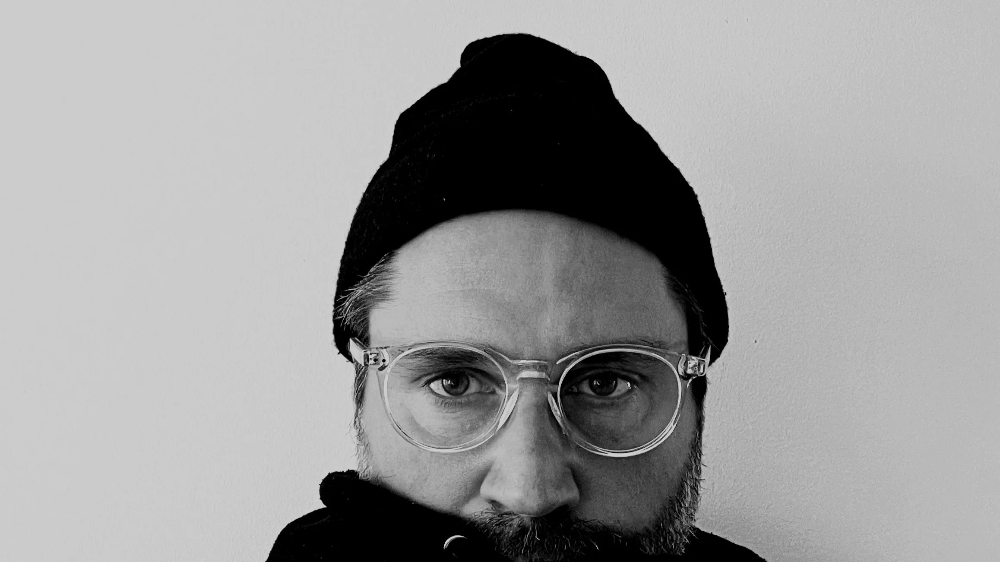

Halloj.
I'm Peder Anzén — a Design Lead and Art Director based in Stockholm, with a background spanning advertising, brand, and product design.
Currently leading design at Aira.
I believe great design emerges from making, not just planning. I value strategy, but I know ideas only prove themselves in execution — in the details, the iterations, what people actually experience.
The process is a conversation, not an artifact.
2024 — Now
Aira / Lead Designer
Leading design for customer-facing apps and internal tools. Owning quality and craft end to end — from early direction to final execution.
2022 — 2024
Epidemic Sound / Lead Product Designer
Led the redesign of Epidemic Sound's homepage and public web. Defined visual direction and raised the bar for craft across the brand's most visible surfaces.
2017 — 2022
Viaplay / Lead Designer
Five years shaping one of Scandinavia's largest streaming platforms. Led design across platform redesign, Android TV, design systems, trailers, post-play, and content discovery.
2013 — 2017
Ottoboni / Art Director
Art direction for major Swedish brands including E.ON, Bonnier, Försvarsmakten and Telia — spanning brand identity, digital experiences, and campaigns.
2010 — 2013
A Perfect World / Creative Director & Partner
Creative Director and Partner. Built and ran a studio serving clients like Fotografiska, Gudrun Sjödén, Gant, and Svenska Spel.
2005 — 2010
Infobahn / Art Director
Early career doing broad, fast, real work — Ericsson, IMG, Betsson, Skolverket, Swedish Style Tokyo and Bob Hund (Sci-Fi Skåne).